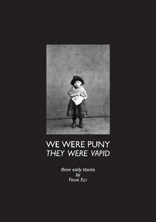

Thursday, December the 17th, 2009
back to: title, date or indexes

Thin and spineless, We Were Puny, They Were Vapid is the fourth Hooting Yard book now available from Lulu. Volume One in a projected series of Out Of Print Pamphlets Reprinted, it contains three stories from before Mr Key's Wilderness Years, together with recently discovered illustrative matter by Dan Chambers and a brand new bit of prefatory twaddle from Mr Key himself. So go and buy it, right this minute.
Note to subscribers : Those of you who have subscriptions at Old Halob level or above will receive a signed and dedicated copy, brought to you by your postie. To ensure delivery, please send an email giving me your current postal address (even if you think I already know it), and be patient while I get so complicated a business organised.
Note to putative subscribers : Anyone taking out a subscription at Old Halob level or above by 31 December 2009 will also receive a signed copy.